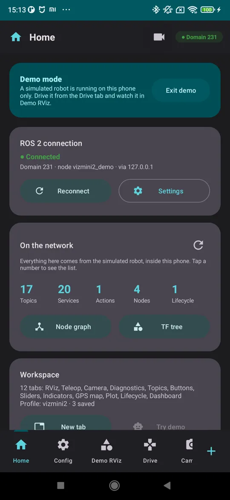

Installation
VizMini2 runs on Android phones and tablets (Android 8.0 or newer) and on PCs with Linux (Ubuntu 20.04 or newer) or Windows (10 or 11). This page is about the phone; for the PC see The PC app.
On the phone

The same app, two ways to get it:
From Google Play (the easiest): install VizMini2 from Google Play. It updates by itself.
As an APK, from the project’s releases page: for phones without Google Play, or to get a version before it reaches the store.
On the phone, download
VizMini2-<version>-universal.apk(it works on every phone; thearm64-v8aone is smaller and fits almost all recent phones).Open it. If Android asks, allow installing apps from that source (your browser or file manager).
Pick one of the two and keep it: each one updates from where it came from (see Updating below).
Open VizMini2. It opens on Home, with no account needed; the first time, a quick tour shows you the basics.
Note
Your phone and your robot must be on the same network (or reachable through a VPN or a Discovery Server) for the app to see the robot. The demo works anywhere: it never leaves the phone.
The app asks for little: permission to show notifications (alerts and the background connection) and, each time you record the screen, Android’s screen capture prompt.
On the PC
The desktop app has the same tabs. On Ubuntu, with apt from VizMini2’s repository (three
commands, in The PC app), or from the same releases page the vizmini2_1.0.0_amd64.deb
(sudo apt install ./vizmini2_*_amd64.deb) or the .tar.gz; on Windows the .msi (for your
user, no administrator needed) or the .zip. On Linux it can also be built from source and run
with ros2 run vizmini2 vizmini2. All the details are in The PC app.
Updating
Download the newer APK (or .deb or .msi) and install it over the one you have: your tabs,
profiles and settings are kept. On Ubuntu with VizMini2’s apt repository, sudo apt upgrade does
it. With the .tar.gz or the .zip, replace the folder. The Changelog lists what changed in each version.
Note
If you installed it from Google Play, update it there: Google Play signs the app with its own key, so an APK from the releases page can’t be installed over it (nor the other way round). To switch from one to the other, uninstall first; export your tabs or save a profile to take them along.
Next: Try the demo or Connect to your robot. An account is optional.